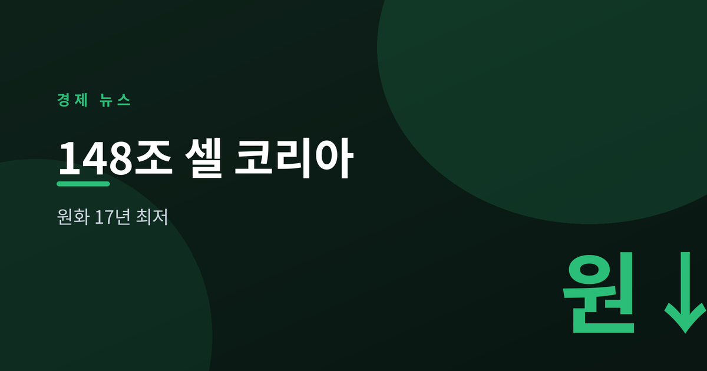
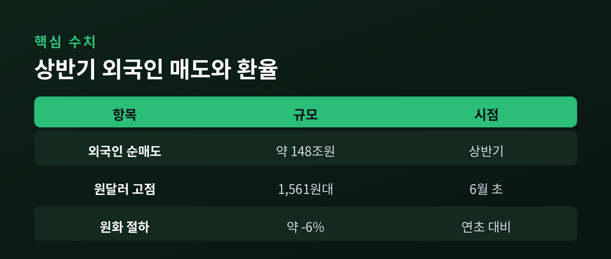
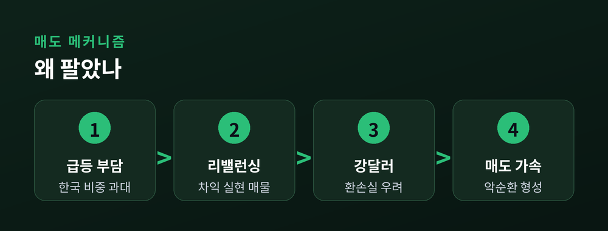
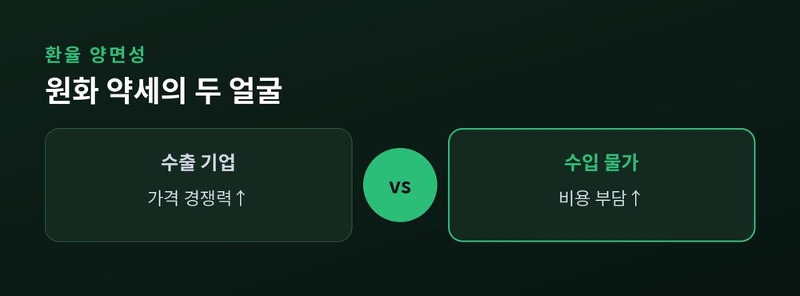

원화는 왜 17년 최저인가

2026년 상반기 외국인 투자자가 코스피에서 순매도한 규모가 약 148조 원에 달하며 사상 최대 '셀 코리아'를 기록했습니다. 이 자금 이탈은 환율에도 직접 영향을 미쳐, 원·달러 환율은 6월 초 한때 달러당 1,561원대까지 오르며 2009년 3월 이후 약 17년 만의 최고치(원화 최저)를 나타냈습니다.
연초 대비 원화 가치는 달러 대비 약 6% 하락해 주요국 통화 가운데서도 약세가 두드러졌습니다. 코리아중앙데일리와 코리아헤럴드는 이를 "외국인 매도와 강달러가 맞물린 결과"로 전했습니다.
"외국인의 기록적 매도세가 하반기에도 이어질 수 있다." — 코리아중앙데일리(2026.7)

핵심 배경은 두 가지, 즉 '차익 실현 리밸런싱'과 '환손실 회피'입니다. 코스피가 2025년 76% 상승에 이어 2026년 상반기에도 크게 오르면서 글로벌 포트폴리오 내 한국 비중이 과도하게 커졌고, 이를 조정하는 매물이 쏟아졌다는 분석입니다.
한국경제 등에 따르면 매도의 상당 부분은 대형 반도체주에 집중됐습니다. 삼성전자와 SK하이닉스 두 종목의 순매도가 전체 코스피 외국인 순매도의 약 87%를 차지한 것으로 집계됐습니다.
여기에 강달러가 겹치며 환손실 우려가 매도를 가속했습니다. 원화가 약해질수록 외국인이 보유한 한국 주식의 달러 환산 가치가 줄어, 서둘러 파는 악순환이 형성된 것입니다.

증시 하락으로 단정하기보다 '가격 조정'과 '통화 압력'을 구분해 볼 필요가 있습니다. 한국거래소 측은 이번 매도를 "한국을 떠나는 신호라기보다 비중 재조정"이라고 설명했다고 CNBC가 전했습니다.
동시에 환율은 실물경제에도 양면으로 작용합니다. 원화 약세는 수출 기업의 가격 경쟁력에는 우호적이지만, 수입 물가와 에너지 비용을 끌어올려 인플레이션 압력을 키울 수 있습니다.

증권가는 하반기에도 매도세가 이어질 가능성을 열어두면서, 복귀 조건으로 '기업 실적'과 '주주환원 강화'를 꼽습니다. 뉴스핌은 외국인 복귀의 관건이 배당·자사주 등 주주환원 정책의 실질적 개선에 있다고 전했습니다.
환율의 방향은 미국 통화정책과 달러 흐름에 크게 좌우될 전망입니다. 7월 16일 예정된 한국은행 금융통화위원회 결정과 미국 금리 경로가 향후 자본 흐름의 변수로 지목됩니다. 다만 이런 지표들은 매일 변동하므로, 특정 시점의 숫자보다 추세의 방향을 함께 살피는 태도가 필요합니다.
이 글은 정보 제공용이며 특정 투자를 권유하지 않습니다.